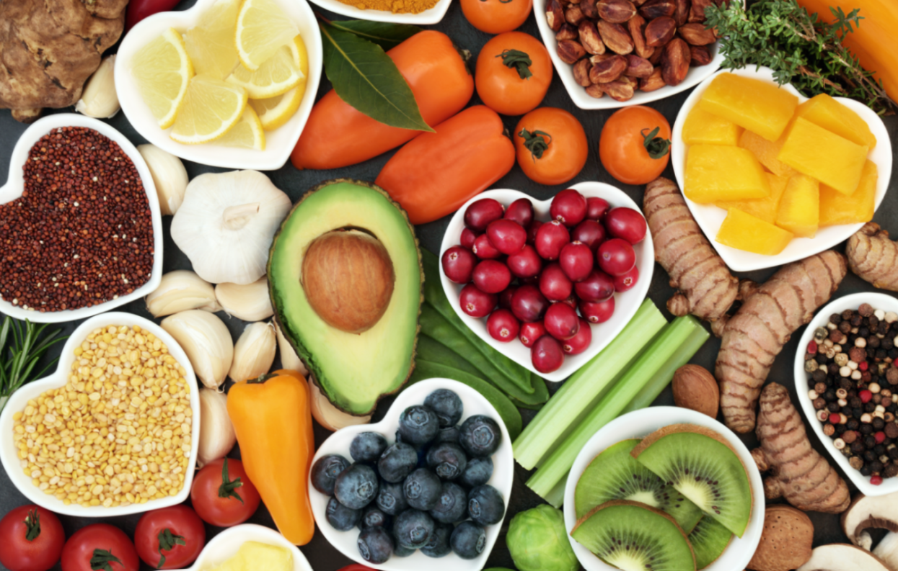

Emerging Tech Trends: What's Next for the Future of Innovation
Technology is advancing rapidly, and several emerging trends are set to reshape our future. Artificial intelligence (AI) and machine learning are enhancing industries by automating tasks and improving decision-making. AI helps in diagnosing diseases and personalizing treatments in healthcare, while in finance, it boosts fraud detection and investment strategies. Blockchain technology, known for its role in cryptocurrencies, provides a secure and transparent way to record transactions, with applications expanding to supply chain management and voting systems. Quantum computing represents a significant leap forward in processing power, potentially revolutionizing fields like drug discovery and cryptography with its ability to solve complex problems more efficiently. Meanwhile, the rollout of 5G networks promises faster internet speeds, lower latency, and improved connectivity, driving innovations in the Internet of Things (IoT), autonomous vehicles, and augmented reality. These trends highlight a future where technology not only enhances efficiency and security but also creates new opportunities for growth and innovation across various sectors.
August 25, 2024
The Rise of Nopic Nutrition: A Revolutionary Approach to Health and Wellness

In a world inundated with fad diets and nutritional trends, nopic nutrition emerges as a revolutionary approach that prioritizes simplicity and holistic well-being. Unlike conventional diets that often focus on calorie counting or macronutrient manipulation, nopic nutrition emphasizes the quality of food and its impact on overall health. This approach advocates for whole, unprocessed foods, rich in essential nutrients, that nourish the body and mind. By eliminating the focus on restrictive eating patterns and instead promoting balance and mindful consumption, nopic nutrition aims to cultivate a sustainable lifestyle that supports long-term health goals. It's not just about what you eat, but also how you eat, fostering a positive relationship with food. With the rise of chronic health issues and lifestyle-related diseases, nopic nutrition presents a compelling alternative to traditional dieting, encouraging individuals to make informed, conscious choices that enhance their physical and mental well-being. As more people seek to break free from the cycle of unhealthy eating habits, nopic nutrition offers a pathway to a healthier, more balanced life.
August 27, 2024
Embracing Holistic Health: The Key to a Balanced and Fulfilling Life

Health is more than just the absence of disease; it is a dynamic state of physical, mental, and emotional well-being. In today's fast-paced world, achieving true health requires a holistic approach that considers the interconnectedness of body, mind, and spirit. This means not only focusing on nutrition and exercise but also prioritizing mental health, stress management, and emotional resilience. Holistic health encourages a balanced lifestyle where self-care, mindfulness, and positive relationships play crucial roles. By integrating practices such as regular physical activity, a nutrient-rich diet, adequate sleep, and mental health care into daily routines, individuals can cultivate a state of overall wellness that goes beyond just physical fitness. Moreover, embracing holistic health fosters a deeper connection to oneself, leading to greater self-awareness and a more fulfilling life. As society increasingly recognizes the importance of mental and emotional well-being, the holistic approach to health is gaining momentum, offering a sustainable path to living a balanced and vibrant life. It’s not just about living longer, but about living better—every day.
August 12, 2024
Comment